IWL_Voorbeeld_1
13 June, 2022
20:49
Omschrijving
Het betreft een hoekwoning gebouwd in 1986, waarbij nog geen extra isolatiemaatregelen zijn genomen.
De woning bevat beneden (oud) dubbelglas en boven enkel glas.
We veronderstellen dat er niet (direct) wordt gestookt op de eerste verdieping.
Bij deze woning wordt verondersteld dat er GEEN actieve luchtstromen tussen de verdiepingen zijn.
We willen bekijken wat de verschillende isolatiemaatregelen voor effect hebben op het energieverbruik en ook op het comfort.
Conclusies
- Door het bij-isoleren van de bouwelementen in de direct verwarmde ruimten, kan het jaarlijks gasverbruik met 400 m3 worden verlaagd (van 1100 m3 naar 700 m3)
- Als het bij-isoleren in stappen gebeurt, heeft de volgende volgorde de voorkeur Glas / Muren / Vloer
- Het verbeteren van de glasisolatie heeft niet alleen een gasbesparing tot gevolg, maar ook een sterke comfortverhoging (minder koude straling), de oppervlakte temperatuur van het verbeterde glas stijgt met bijna 5 graden (van 12.7 naar 17.4)
- Het bij-isoleren van de bovenverdieping en zoldervloer brengt de totale besparing op 600 m3 gas per jaar ( dus 200 m3 extra, van 1100 m3 naar 500 m3)
- Als het glas op de bovenverdieping wordt vervangen, dan stijgt de oppervlakte temperatuur van de ramen op de bovenverdieping met meer dan 10 graden (van 2.2 naar 12.5 graden)
- Als alle maatregelen worden genomen, stijgt de temperatuur op de bovenverdieping met bijna 5 graden (van 9.9 naar 14.3 graden )
- ls de zolder niet als woonruimte gebruikt wordt kun je (indien mogelijk) beter de zoldervloer isolatie verbeteren, dan de dakisolatie, immers dit vergt 4 keer minder isolatie materiaal en je omzeilt een deel van de kieren van de muur-dak aansluitingen
Gegevens van de woning
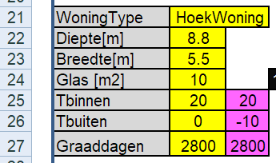 | Hier vullen we de eigenschappen van de begane grond van de woning in en Omdat we geïnteresseerd zijn in comfort, vullen we Een prettige waarden voor Tbinnen en Een veel voorkomende (slechte) waarde voor Tbuiten in (deze temperaturen hebben geen invloed op het berekende gasverbruik, wel op het berekende vermogen, dat dus niet juist zal zijn !!!) |

| Hier moeten we het oppervlakte van het glas op de bovenverdieping invullen en Omdat we de bovenverdieping niet direct verwarmen (alleen indirect door de begane grond), laten we het temperatuur veld C11 leeg |

| Nu vullen we in veld C3 het jaartal in, waarna in de velden daaronder de Rc waarden worden getoond die in dat bouwjaar minmaal verplicht waren. Dus dat zijn waarden die we kunnen gebruiken als we geen feitelijke waarden hebben. |

|
Vervolgens moeten we alle Rc-waarden in kolom H invullen.
Ug-waarden:
Enkel glas Ug = 5.8
Dubbel glas Ug = 2.8
HR++ glas Ug = 1.0 HR+++ glas Ug = 0.7 Je kunt deze waarde natuurlijk door het rekenblad zelf laten omrekenen naar Rc-waarden, vul voor bijvoorbeeld dubbelglas in:
= 1 / 2.8
(het "= teken" is belangrijk) |
Totaal plaatje
Hier zien we dat het totaal plaatje met als resultaat het berekende gasverbruik in de zwarte velden en in veld D11 de temperatuur op de bovenverdieping (als we daar niet expliciet stoken). Verder zie je alle oppervlakte temperaturen bij de ingestelde binnen en buiten temperatuur. Nogmaals we zijn hier geïnteresseerd in gasverbruik en comfort en daardoor zijn de vermogens-getallen niet zinvol !!
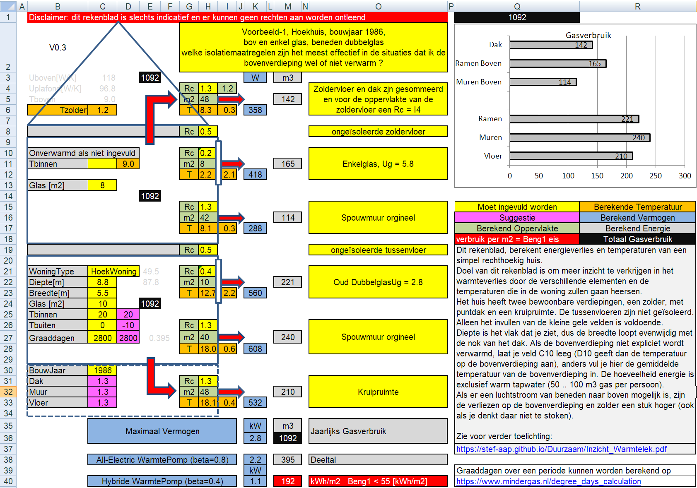
Gasverbruik en Temperaturen

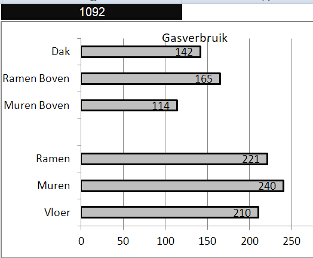 | We zien dat bij een buitentemperatuur van 0 graden Celsius, de temperatuur op de bovenverdieping nog steeds 9 graden Celsius bedraagt, wat niet super koud is.
Het gasverbruik komt met name van de begane grond, de ruimte die expliciet wordt verwarmd.
We zien dat het warmtelek door Muren, Ramen en Vloer nagenoeg even groot is. Glas HR++ is bijna 3 keer beter Rc=1 Muren hebben vermoedelijk een spouw van 6 à 7 cm met daarin 3 cm glaswol. Door deze na-te-isoleren kan een Rc=2.4 worden bereikt. Vloer kan zondermeer naar een Rc van 3.5 worden gebracht. |
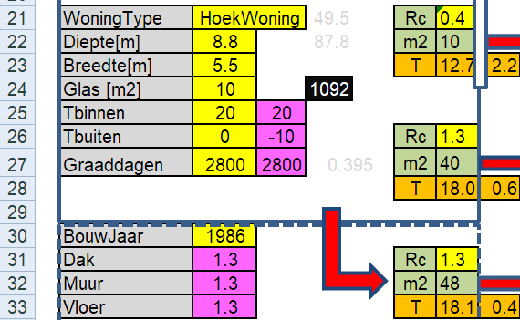 | Voordat we een voorkeur voor de volgorde van de isolatie bepalen is het goed om eens naar de oppervlakte temperaturen te kijken.
Helaas geeft deze versie nog niet de temperatuur van het plafond, maar daarvan weten we dat die goed is. Muren en vloeren zitten op een temperatuur 18 graden Celsius, dus dat is prima. Het raam is echter minder dan 13 graden Celsius, dus dat voelen we (door de straling) als een koude bron. Vanuit comfort is het dus aanbevelingswaardig om eerst het glas te verbeteren.
|
Eerste isolatie maatregelen
Omdat de warmtestromen van vloer, muur en raam op de begane grond parallelle stromen zijn, beïnvloeden de isolatiemaatregelen elkaar niet en kunnen we hun invloed in een keer allemaal tegelijkertijd bekijken.
Orgineel | Verbeterde ramen, muren en plafond |
| 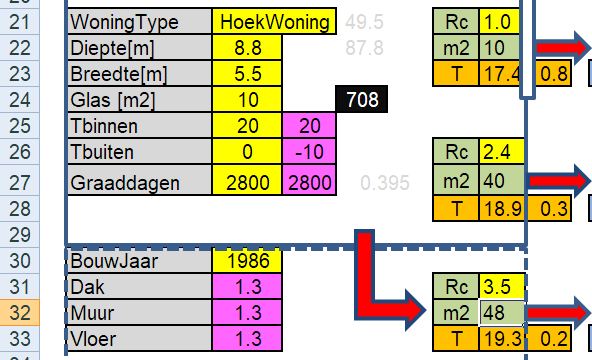 We zien dat de oppervlakte temperaturen van muur en vloer iets toenemen, maar dat de oppervlakte temperatuur van het raam fors is toegenomen en dat is comfortverbetering !! Note: als de spouwmuur wordt geïsoleerd, wordt dat in het algemeen zowel op de begane grond als op de verdieping gedaan. |
| 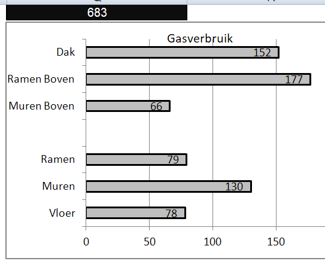 We zien dat we een forse gasbesparing van meer dan 400 m3 gas zouden realiseren. Muur 158 m3 Raam 142 m3 en comfortwinst Vloer 132 m3 Rc zou zelfs nog hoger kunnen |
Ieder van de maatregelen levert ongeveer eenzelfde besparing aan gas op. Iedere maatregel kost ook ongeveer evenveel, tenzij je het zelf doet, maar laten we nu even buiten beschouwing. Als we de maatregelen stapsgewijs willen implementeren, dan lijkt de volgende volgorde de meest voor de hand liggende
1 = Raam, levert namelijk naast een gasbesparing ook een comfortverhoging\
2 = Muur (iets effectiever dan vloer, meestal veel effectiever, maar de spouwbreedte beperkt de winst)
3 = Vloer
De oplettende lezer zal het misschien verbazen dat het gasverbruik (=warmtelek) door de ramen boven en door het dak groter is geworden door de genomen maatregelen, maar dat is heel plausibel, want de temperatuur van de bovenverdieping stijgt door de verbeterde muurisolatie aldaar.
Volgende maatregelen
De volgende isolatiemaatregelen zijn Ramen boven en Dak. Omdat dit geen parallelle stromen zijn, moeten we deze maatregelen eerst apart bekijken.
Boven HR++ glas | Dak beter isoleren Rc=6 |
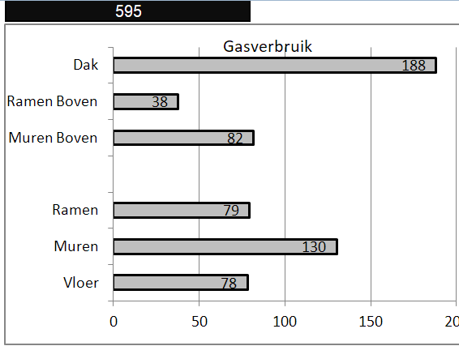 | 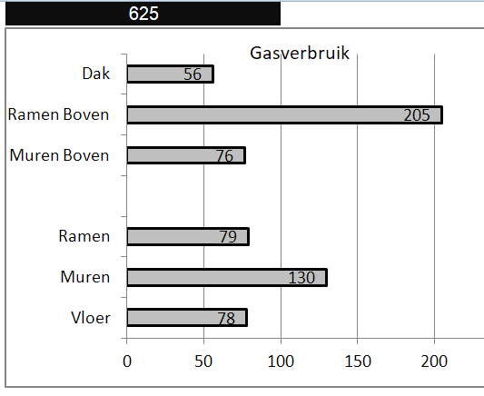 |
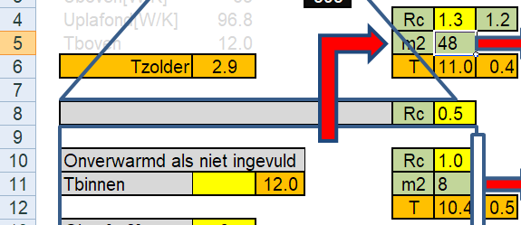 | 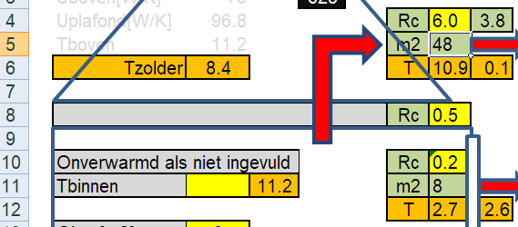 |
We zien dat het verbeteren van het glas iets meer oplevert dan het verbeteren van het dak, zowel minder gasverbruik alsook een hogere temperatuur op de bovenverdieping.
Bovendien, net zoals op de begane grond, ook het comfort wordt verhoogt, de ruimte temperatuur stijgt bijna een graad, maar met name de stralingstemperatuur van de ruiten stijgt ontzettend fors.
Dak of zoldervloer ?
Als de zolder niet als woonruimte gebruikt wordt kun je, indien mogelijk, beter de zoldervloer isolatie verbeteren, immers dit vergt 4 keer minder isolatie materiaal, oppervlakte is ongeveer de helft en dikte is ongeveer de helft.n
Zoldervloer extra isoleren, Rc=3 | Dak extra isoleren, Rc=6 |
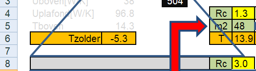 | 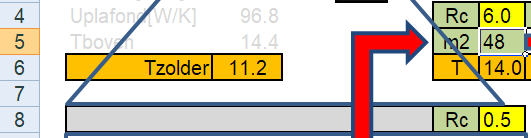 |
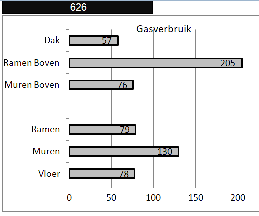 |
|
Alle maatregelen
Als alle maatregelen worden uitgevoerd, kunnen we ongeveer 600 m3 gas per jaar besparen.
Orgineel | Met verbeteringen |

| 
|
Warmtepomp
Belangrijke factor die niet in dit rekenblad wordt meegenomen is of het afgifte systeem van de warmte voldoende geschikt is voor lage temperatuur verwarming, dus die voorwaarde moet apart worden beoordeeld.
Tweede belangrijke omissie is dat de ventilatie en infiltratie niet zijn meegenomen
Voor het bereken van het vereiste vermogen moeten met name de Tbinnen en Tbuiten in C25 en C26 correct worden ingevuld

Hier staan dan de vermogens (exclusief ventilatie en infiltratie)
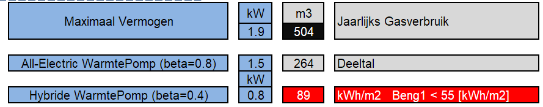
Totaalplaatje na alle maatregelen
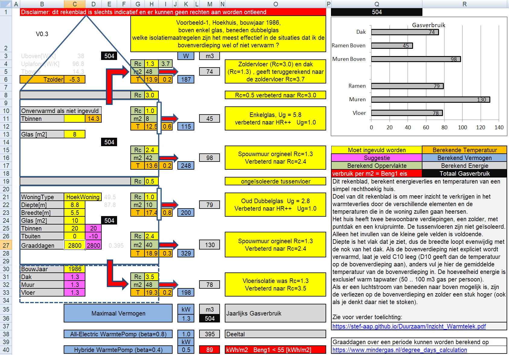
Inzicht WarmteLek Woningen.